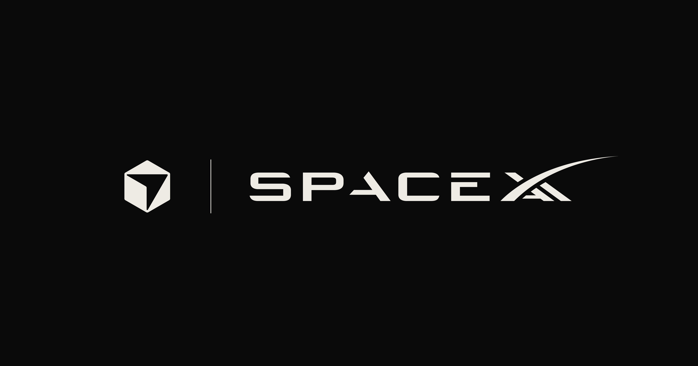
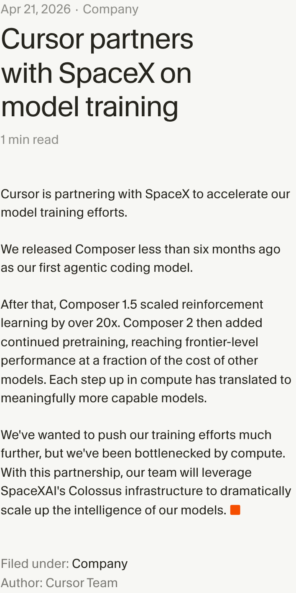
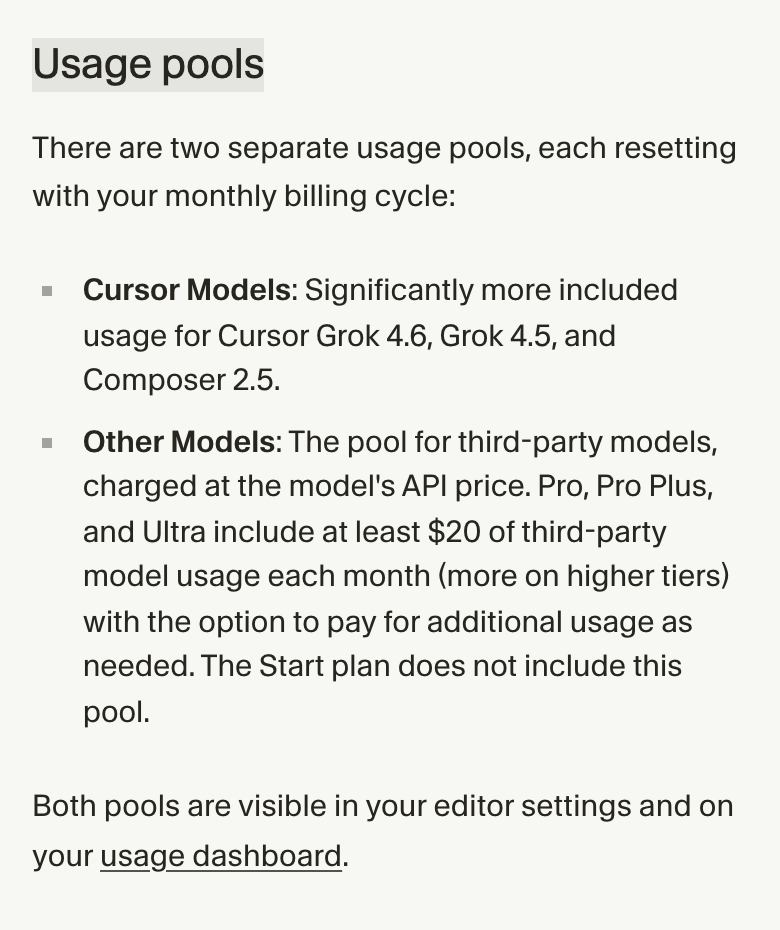

Cursor 正式进入 SpaceX
8 月 14 日，Cursor 宣布已被 SpaceX 正式收购，完成从今年 4 月开始的收购流程。双方没有公布交易价格，也没有交代管理层和产品路线会怎样调整。
这笔交易让 Cursor 的编程模型和开发者产品接上了 SpaceX 的大规模算力。资源已经接通，结果还没出现。更强的模型和更低的价格，目前仍是 Cursor 对未来的承诺。

媒体报道把交易金额写成 600 亿美元，但 Cursor 的收购公告没有确认这个数字。公告同样没有说明 Cursor 是否继续独立运营。第三方模型和订阅方案会不会变，企业合同也没有提到。
SpaceX 与 Cursor 的关系已经从算力合作走到了收购。要判断这笔交易会怎样改变 AI 编程，现有产品结构比交易传闻更值得看。
四月的算力合作，走到了收购
这次收购有一条很清楚的时间线。4 月 21 日，Cursor 宣布与 SpaceX 合作训练模型，并直言团队当时受到算力限制。合作方案是使用 SpaceXAI 的 Colossus 基础设施，继续扩大自研编程模型的训练规模。
Cursor 当时给出的两个例子很具体。Composer 1.5 的强化学习规模比前一阶段扩大了 20 倍以上；随后推出的 Composer 2 又加入持续预训练。这些投入解释了为什么算力会成为 Cursor 继续训练模型时的瓶颈。
不到四个月，合作变成了收购。Cursor 在最新公告里说，加入 SpaceX 后将获得更大规模的 GPU 资源，用来训练更强、运行成本更低的模型。“全球最大的 GPU 资源”和“更低成本”都来自 Cursor 自己的表述。公告没有给出训练规模和单位推理成本，新模型何时发布也不知道。

这套组合的机制并不复杂。SpaceX 提供算力，Cursor 负责模型和产品，如今双方连股权关系也合在了一起。它缩短了资源之间的距离，但还没有证明模型迭代一定会更快。
第一方模型已经有了自己的使用池
下一代模型还没出现，Cursor 的现有订阅体系已经把第一方模型和第三方模型放进两个使用池，分别叫 Cursor Models 和 Other Models。
Cursor Models 里包括 Grok 4.6、Grok 4.5 和 Composer 2.5。Other Models 则保留 OpenAI、Anthropic、Google 等公司的模型，按照相应 API 价格消耗额度。团队和企业方案中，第三方模型还会涉及 Cursor Token Rate，Cursor 的第一方模型则不收这项费用。Pro、Pro Plus 和 Ultra 每月包含至少 20 美元的第三方模型用量；Grok 4.6 从 8 月 12 日起另有一周的五折发布优惠。

用户现在仍能选择外部模型，第一方模型在包含额度和计费规则上已经占据更有利的位置。收购公告没有宣布停止接入任何第三方模型，也没有说 Grok 会成为默认选项；把 Cursor 写成封闭生态还太早。
Cursor 在收购公告中特别提到 Grok 4.6，称它是双方目前能共同打造什么的“早期一瞥”。它已经进入第一方模型池，却还没有公开与 Composer 2.5、第三方模型在相同代码任务上的连续对照。
收购带来的变化会先出现在可观察的产品细节里。模型发布是否加快，Grok 和 Composer 的价格是否继续下降，都能直接核对。第一方模型在选择页与订阅额度中的位置也会说明 Cursor 怎样分配资源。
最敏感的仍是代码数据
Cursor 离真实开发工作很近。编辑器会接触代码库、提示词、编辑动作和模型输出，这让隐私规则在收购之后变得更加重要。
按照 Cursor 现行说明，开启 Privacy Mode 后，客户数据不会被 Cursor 用于训练；Cursor 称其与模型提供方维持零数据保留协议，但风控调查和明确标注的非零保留模型存在例外。
关闭 Privacy Mode 后，代码库数据、提示词、编辑动作和代码片段等内容可能被存储，用于改进功能和训练模型。即便用户填入自己的 API Key，请求仍会经过 Cursor 后端，由它完成最后的提示词组装。
收购公告没有宣布这些规则发生变化，也没有说明 Cursor 数据是否会流向 SpaceX 的其他业务。现阶段只能按照已有隐私设置理解产品，不能从股权变化直接推导出新的数据用途。
SpaceX 已经把自己的算力接到了 Cursor 的模型和代码编辑器上。Cursor 能否把这套资源换成更好用、价格更低的模型，会在接下来的版本和账单中留下痕迹；数据边界能否继续说清楚，则会影响企业客户愿意把多少真实代码交给它。交易已经完成，产品层面的答案才刚开始出现。